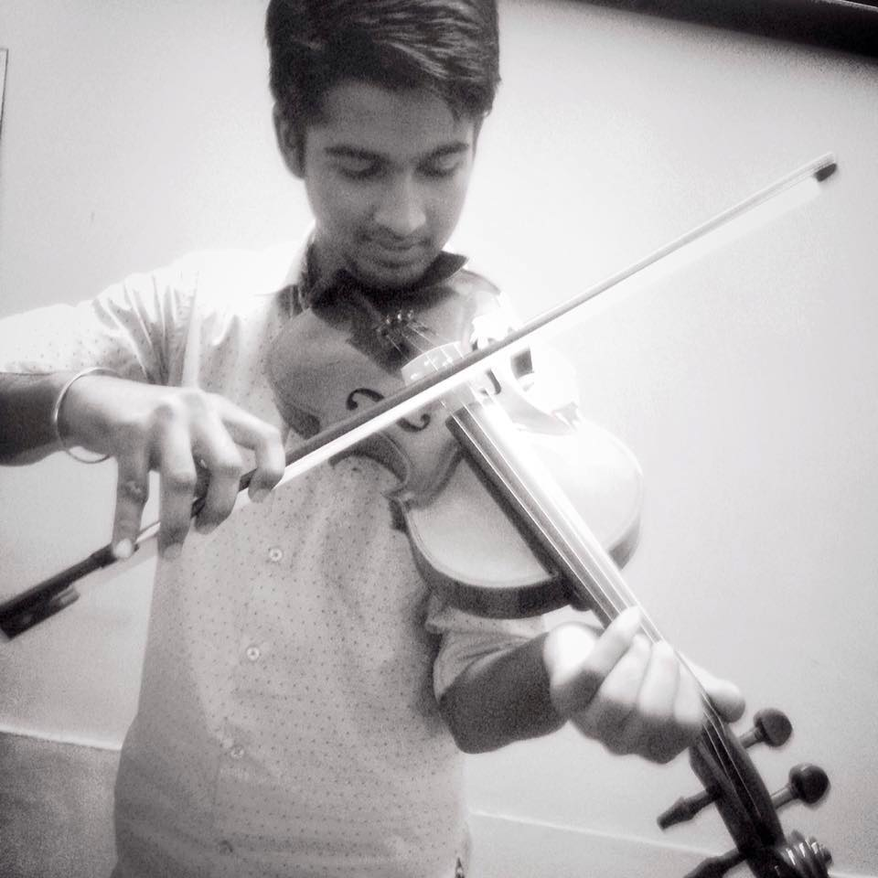
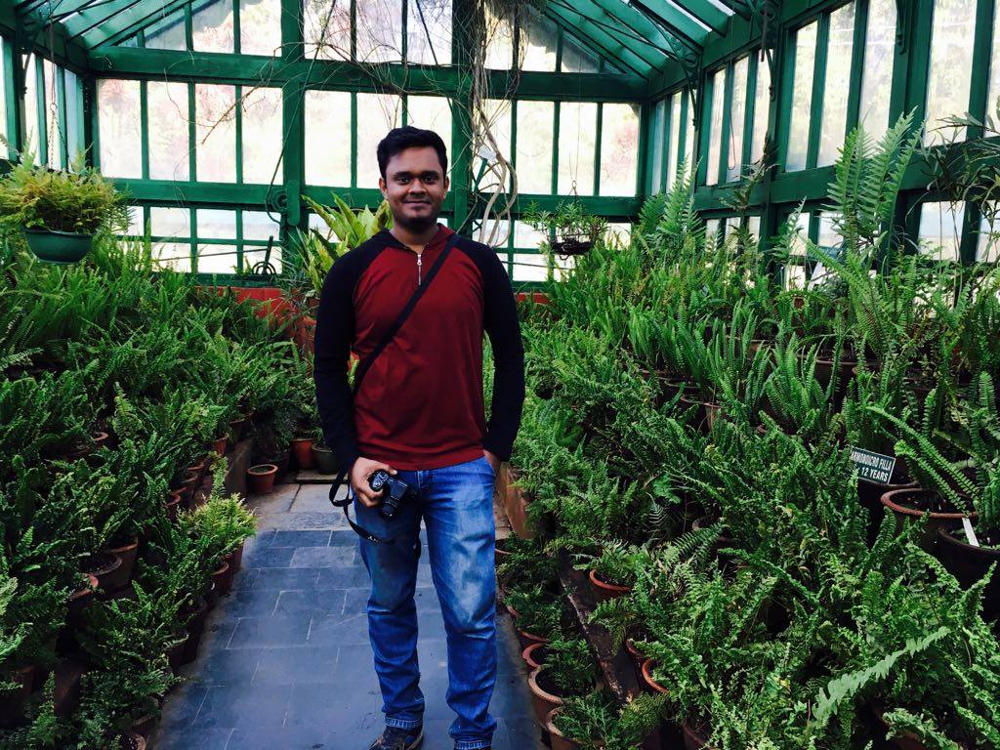
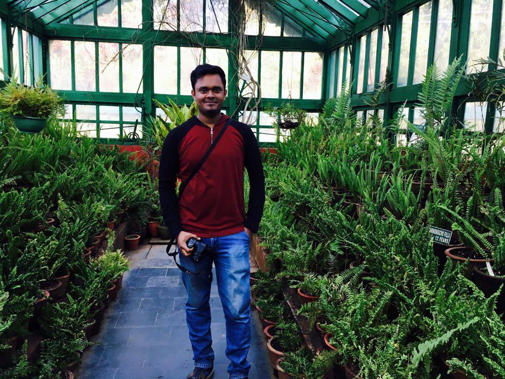

Page Stack Navigation
Based on Ilya Kostin's Dribbble shot Stacked navigation
Documentation
Based on Ilya Kostin's Dribbble shot Stacked navigation
"We cannot have peace among men whose hearts find delight in killing any living creature." — Rachel Carson
Manuals
Based on Ilya Kostin's Dribbble shot Stacked navigation
"When you adopt a vegan diet we make a connection, you don't go back, it is not a diet, it is a lifestyle." — Freelee Frugivore

Members
Hardware


Mandeep Singh
Mukul Chhabra
Aseem Saini


Suraj Kumar
Himanshu Chandna
AutoPilot
 


Palash Aggarwal
Saumya Balodi
Aditya Jain
Blogs
- Different Types of Drag- By Ritvik Agarwal
- Experience with Control station
- Know about LiPo batteries Vijay Sharma
- Working of an airfoil -By Ritvik Agarwal
- Brushed and Brushless Motors -By Ritvik Agarwal
- Need of winglets -By Ritvik Agarwal
- Propellers -By Aditya Jain
- Wing Design : An intro by Ritvik
- Everything you should know about ESCs : Blog by Yash
- Fly safe! Learn more from Ritvik’s Blog
- Motors and their usage in planes : Blog by Yash Sherry
Training & Learning Center
Based on Ilya Kostin's Dribbble shot Stacked navigation
"The moment I began to understand what was going on with the treatment of animals, it led me more and more in the way of the path I am [on] now, which is a complete vegan." — Bryan Adams
Sponsors
Based on Ilya Kostin's Dribbble shot Stacked navigation
IIIT Delhi
Sarvottam Group
Projects
Based on Ilya Kostin's Dribbble shot Stacked navigation
The project that the team, Aurora, wishes to propose, has three parts. Each relates to a relevant social cause. The causes and the correlated technical tasks are as follows:
- Rural Development: Better planning through Aerial Mapping
With the honourable Prime Minister’s Digital India initiative, the digitisation of land records, especially of the rural areas, is one of the topmost priority of the central government. With the use of drone technology, we propose a two-fold solution under this project:- By building an aerial map using a drone, we can calculate the amount of area under agricultural practise, thus providing vital statistics to the government.
- By building heat map of an agricultural farm using drone, we can provide useful insights to the farmers for better agricultural practises.
- Disaster Management: Surveillance and Package Airdrop
- Surveillance in disaster-hit areas - This comes under the most important tasks of UAVs. Constant human monitoring uses more resources and has chances of human error. Examples of such cases are constant security surveillance and emergency disaster management surveillance respectively. The latter requires constant monitoring of the infrastructural damage caused by the disaster and identification of victims’ location to provide first aid.
- Relief Package Delivery - Another task UAVs, in particular copter drones, can accomplish is precise delivery. The airdrop mechanisms can be used for a variety of purposes. This together combined with autonomous navigation, UAVs become a very important resource during emergencies, quick response situations, delivery of relief packages at remote places etc.
- Environmental Sustainability: Air Quality Detection
- Air quality detection - We plan to measure and monitor air quality in various places of interest such as railway stations, crowded markets etc. and provide vital statistics to the government, to take appropriate measures.
Contact
Based on Ilya Kostin's Dribbble shot Stacked navigation
Indraprastha Institute of Information Technology, Delhi
Okhla Industrial Estate,Phase III
(Near Govind Puri Metro Station)
New Delhi, India - 110020